본 포스트는 서울대학교 Chenglin Fan 교수님의 4190.407 Algorithms (Design and Analysis of Algorithms) 강의 자료(12강 Bellman-Ford, Floyd-Warshall, and Dynamic Programming!, 총 65장)를 바탕으로, 강의를 처음 듣는 독자도 논리적 흐름을 따라갈 수 있도록 재구성한 것입니다. 1강 표지에 “Part of Slides Borrowed From Mary Wootters”라고 밝혀 두었듯 이 시리즈의 슬라이드는 상당 부분 Stanford의 Mary Wootters 교수님 자료에서 가져온 것이며, 이번 강의도 지난 강의의 Stanford 캠퍼스 그래프를 그대로 이어 씁니다. 본문의 대섹션 구분은 2번째 슬라이드의 Today가 세워 둔 흐름 — 벨만-포드 알고리즘 → 벨만-포드는 동적 계획법의 특수한 경우 → 동적 계획법이란 무엇인가(피보나치 수) → 또 하나의 예: 플로이드-워셜 알고리즘 — 을 따르고, 64번째 슬라이드의 Recap으로 맺었습니다.
한 줄 요약 (TL;DR)
“겹치는 작은 문제들의 답을 표에 한 번씩만 적어 큰 문제를 푸는 것이 동적 계획법이고, 벨만-포드와 플로이드-워셜은 이렇게 표를 채워 최단 경로를 구하는 두 예입니다.”
지난 강의에서 맛만 본 벨만-포드 알고리즘(Bellman-Ford algorithm)은 라운드마다 배열 \(d^{(i)}\)를 따로 두었는데, 그 이유가 이번 강의에서 드러납니다. \(d^{(i)}[v]\)는 간선 \(i\)개 이하로 \(s\)에서 \(v\)까지 가는 최소 비용이라는 부분 문제의 답이고, \(d^{(i+1)}\)은 \(d^{(i)}\)만으로 계산됩니다. 이처럼 큰 문제의 최적해를 작은 문제의 최적해로 표현할 수 있고(최적 부분 구조, optimal substructure), 같은 작은 문제가 여러 번 쓰이는(중복되는 부분 문제, overlapping subproblems) 상황에서 작은 문제의 답을 표에 저장해 재사용하는 설계 기법이 동적 계획법(dynamic programming)입니다. 피보나치 수를 그대로 재귀로 구하면 같은 값을 지수적으로 많이 다시 계산하지만, 표를 아래에서부터 채우거나(상향식, bottom-up) 재귀하면서 답을 적어 두면(하향식 top-down, 메모이제이션 memoization) \(O(n)\)에 끝납니다. 같은 발상으로 플로이드-워셜 알고리즘(Floyd-Warshall algorithm)은 “중간에 거쳐도 되는 정점을 \(\{1,\ldots,k\}\)로 제한한 최단 경로”를 부분 문제로 삼아 \(D^{(k)}[u,v] = \min\{D^{(k-1)}[u,v],\ D^{(k-1)}[u,k] + D^{(k-1)}[k,v]\}\)를 \(k = 1,\ldots,n\)에 대해 채워, 음수 순환이 없는 그래프의 모든 쌍 최단 경로(all-pairs shortest paths)를 \(O(n^3)\)에 구합니다.
개요 (Today)
슬라이드는 오늘 다룰 내용을 이렇게 밝힙니다.
- 벨만-포드 알고리즘 (Bellman-Ford Algorithm)
- 벨만-포드는 동적 계획법(Dynamic Programming)의 특수한 경우입니다!
- 동적 계획법이란 무엇인가?
- 워밍업 예제: 피보나치 수 (Fibonacci numbers)
- 또 하나의 예제:
- 플로이드-워셜 알고리즘 (Floyd-Warshall Algorithm)
지난 강의는 69번째 슬라이드에서 벨만-포드를 “다음 강의에서 더 엄밀하게 다시 다룬다”고 예고했고, 마지막 슬라이드는 Next Time: Dynamic Programming!!!이었습니다. 이번 강의는 그 두 약속을 한꺼번에 지킵니다. 벨만-포드를 다시 엄밀하게 보고 나면, 그것이 바로 동적 계획법의 한 예라는 것이 자연스럽게 드러나도록 짜여 있습니다.
1. 벨만-포드 알고리즘 (Bellman-Ford Algorithm)
1.1 되짚어보기: 가중 유향 그래프 (Recall)
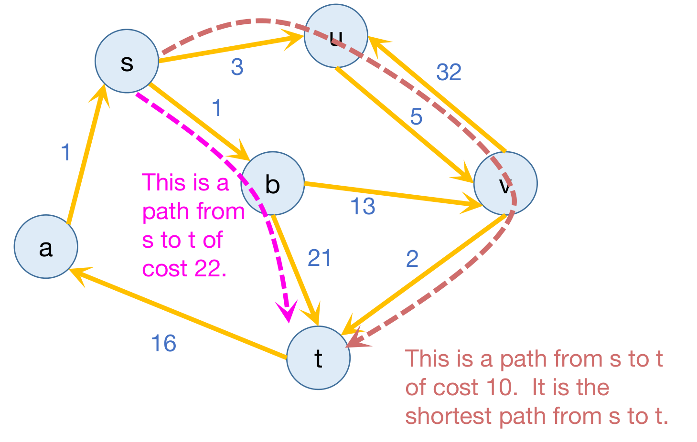
지난 강의의 정의를 다시 짚습니다.
- 간선의 가중치는 비용(cost)을 나타냅니다.
- 경로의 비용(cost of a path)은 그 경로를 따라가는 간선 가중치의 합입니다.
- \(s\)에서 \(t\)로 가는 최단 경로(shortest path)는 \(s\)에서 \(t\)로 가는 유향 경로 가운데 비용이 가장 작은 것입니다.
- 단일 출발점 최단 경로 문제(single-source shortest path problem)는 그래프의 모든 \(v\)에 대해 \(s\)에서 \(v\)로 가는 최단 경로를 찾는 문제입니다.
이 포스트에서는 슬라이드의 표기를 따라 \(s\)에서 \(v\)까지의 최단 경로의 비용, 곧 거리를 \(\mathrm{dist}(s,v)\)로 쓰고, 간선 \((u,v)\)의 가중치를 \(w(u,v)\)로 씁니다. 지난 포스트의 \(d(s,v)\)와 같은 것입니다.
1.2 지난 시간: 다익스트라와 그 단점 (Last Time / Dijkstra Drawbacks)
지난 시간의 주인공은 다익스트라 알고리즘(Dijkstra’s algorithm)이었습니다. 다익스트라는 가중 그래프에서 단일 출발점 최단 경로 문제를 풉니다. 하지만 두 가지 단점이 있었습니다.
- 음이 아닌 간선 가중치(non-negative edge weights)가 필요합니다.
- 가중치가 바뀌면 전체를 다시 돌려야 합니다.
1.3 벨만-포드 알고리즘의 장단점 (Bellman-Ford Algorithm)
벨만-포드는 이 두 단점을 겨냥합니다. 대신 속도를 희생합니다.
- (−) 다익스트라 알고리즘보다 느립니다.
- (+) 음수 간선 가중치를 다룰 수 있습니다.
- 음수 순환을 감지할 수 있습니다! (아래 §1.4의 여담 뒤에 슬라이드 8이 덧붙이는 항목입니다.)
- 어떤 간선이 비용이 드는 것이 아니라 적극적으로 타는 것이 좋다고 말하고 싶을 때 쓸모 있습니다.
- 다른 알고리즘의 구성 요소(building block)로 쓸모 있습니다.
- (+) 가중치가 바뀔 때 어느 정도 유연하게 대응합니다.
- 이것이 무슨 뜻인지는 나중에 봅니다.
1.4 여담: 음수 순환 (Aside: Negative Cycles)
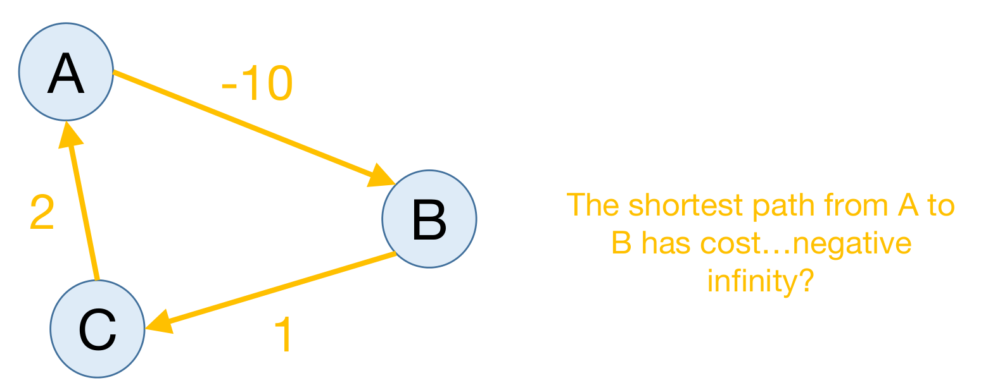
- 음수 순환(negative cycle)은 간선 가중치의 합이 음수인 순환입니다.
- 음수 순환이 있으면 최단 경로가 정의되지 않습니다!
그림의 순환 A → B → C → A의 비용은 \(-10 + 1 + 2 = -7\)입니다. A에서 B로 가는 경로를 생각해 보면 다음과 같습니다.
| 경로 | 비용 |
|---|---|
| A → B | \(-10\) |
| A → B → C → A → B | \(-10 + 1 + 2 - 10 = -17\) |
| 순환을 \(k\)바퀴 더 돈 뒤 B에서 멈춤 | \(-10 - 7k \;\to\; -\infty\) |
“가장 싼 경로”가 없으니 최단 경로 문제의 답도 없습니다. 이것이 뒤에서 벨만-포드가 음수 순환을 풀지 못하고 감지만 하는 이유입니다.
1.5 벨만-포드 대 다익스트라 (Bellman-Ford vs. Dijkstra)
두 알고리즘은 같은 갱신식을 씁니다. 다른 것은 어느 정점을 갱신하느냐입니다.
| 다익스트라 | 벨만-포드 | |
|---|---|---|
| 정점 고르기 | \(d[u]\)가 가장 작은 \(u\)를 찾습니다 | \(d[u]\)가 가장 작은 \(u\)를 굳이 찾지 않습니다 |
| 갱신 | \(u\)의 이웃만: \(d[v] = \min(d[v],\ d[u] + w(u,v))\) | 모두가 갱신합니다! |
다익스트라는 “가장 가까운 미확정 정점”을 고르는 영리한 규칙 덕분에 빠르지만, 지난 포스트에서 보았듯 그 규칙의 정당성이 음이 아닌 가중치에 기대고 있었습니다. 벨만-포드는 그 규칙을 버리고 모든 정점을 매 라운드 갱신합니다. 느려지는 대신, 정당성 증명에서 가중치의 부호를 쓸 일이 없어집니다.
1.6 예제로 보는 벨만-포드 (Bellman-Ford)
슬라이드 10–14는 지난 강의와 같은 캠퍼스 그래프에서 “각 정점이 Gates에서 얼마나 먼가?”를 벨만-포드로 계산합니다. 슬라이드 제목 옆의 작은 그림대로 방향 없는 간선 하나는 서로 반대 방향의 두 유향 간선으로 봅니다. 간선은 Gates–Packard(1), Packard–CS161(1), CS161–Union(4), Union–Dish(20), Packard–Dish(22), Gates–Dish(25)이고, 정점이 \(n = 5\)개이므로 배열은 \(d^{(0)}\)부터 \(d^{(4)}\)까지입니다. (이번 강의 슬라이드는 지난 포스트의 표에서 CS407로 적었던 정점을 CS161로 적습니다. 같은 정점입니다.)
슬라이드 아래에 적힌 갱신 규칙은 다음과 같습니다.
- \(i = 0, \ldots, n-2\)에 대해:
- \(V\)의 각 \(v\)에 대해:
- \(d^{(i+1)}[v] \leftarrow \min\big(d^{(i)}[v],\ d^{(i)}[u] + w(u,v)\big)\) — 이때 \(v\)로 들어오는 모든 이웃 \(u\)에 대해서도 최솟값을 취합니다.
- \(V\)의 각 \(v\)에 대해:
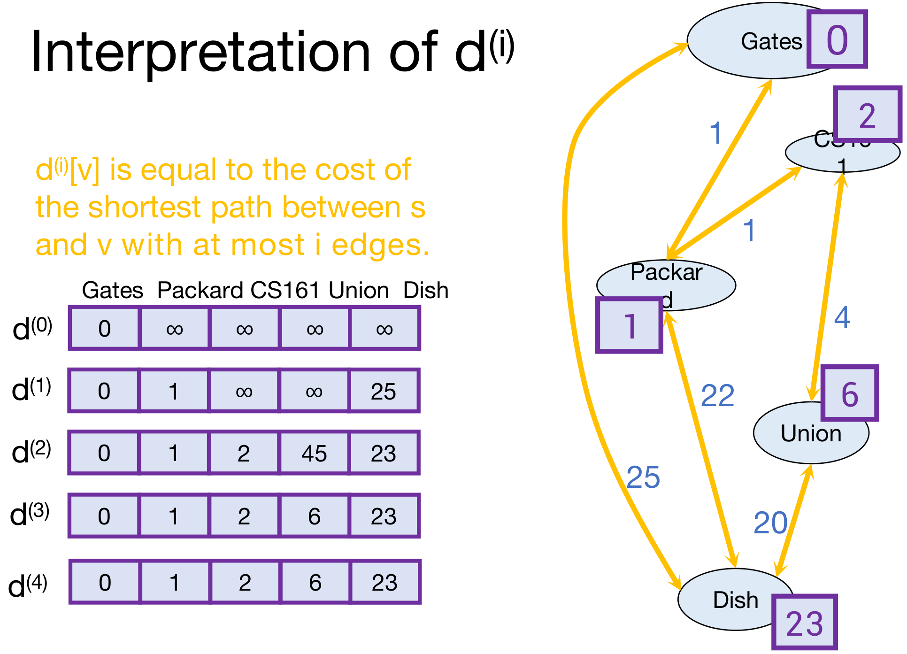
| Gates | Packard | CS161 | Union | Dish | |
|---|---|---|---|---|---|
| \(d^{(0)}\) | 0 | \(\infty\) | \(\infty\) | \(\infty\) | \(\infty\) |
| \(d^{(1)}\) | 0 | 1 | \(\infty\) | \(\infty\) | 25 |
| \(d^{(2)}\) | 0 | 1 | 2 | 45 | 23 |
| \(d^{(3)}\) | 0 | 1 | 2 | 6 | 23 |
| \(d^{(4)}\) | 0 | 1 | 2 | 6 | 23 |
라운드별로 무엇이 바뀌는지 갱신 규칙을 그대로 적용해 보면 다음과 같습니다.
- \(d^{(1)}\) — \(d^{(0)}\)에서 값이 유한한 정점은 Gates뿐이므로 Gates의 이웃만 바뀝니다. Packard \(= 0 + 1 = 1\), Dish \(= 0 + 25 = 25\).
- \(d^{(2)}\) — CS161 \(= d^{(1)}[\text{Packard}] + 1 = 2\), Dish \(= \min(25,\ 1 + 22) = 23\), Union \(= d^{(1)}[\text{Dish}] + 20 = 45\).
- \(d^{(3)}\) — Union \(= \min(45,\ d^{(2)}[\text{CS161}] + 4,\ d^{(2)}[\text{Dish}] + 20) = \min(45, 6, 43) = 6\).
- \(d^{(4)}\) — 아무것도 바뀌지 않습니다. 슬라이드 14의 붉은 글씨대로 이것이 최종 거리입니다!
1.7 라운드별 배열의 해석 (Interpretation of d⁽ⁱ⁾)
표를 세로가 아니라 행 단위로 읽으면 각 배열에 분명한 뜻이 있습니다.
- \(d^{(i)}[v]\)는 \(s\)와 \(v\) 사이에서 간선을 많아야 \(i\)개 쓰는 최단 경로의 비용과 같습니다.
앞의 표가 그대로 보여 줍니다. \(d^{(2)}[\text{Union}] = 45\)는 간선 두 개 이하로 Union에 가는 가장 싼 길(Gates → Dish → Union, \(25 + 20\))이고, \(d^{(3)}[\text{Union}] = 6\)은 간선 세 개 이하로 가는 가장 싼 길(Gates → Packard → CS161 → Union, \(1 + 1 + 4\))입니다. 45는 “틀린 값”이 아니라 더 작은 문제의 정확한 답입니다. 이 관점이 이번 강의 전체의 열쇠이므로 슬라이드 26이 한 번 더 강조합니다(§1.13).
1.8 벨만-포드는 왜 동작할까요 (Why Does Bellman-Ford Work?)
증명은 귀납법입니다.
- 귀납 가정: \(d^{(i)}[v]\)는 \(s\)와 \(v\) 사이에서 간선을 많아야 \(i\)개 쓰는 최단 경로의 비용과 같습니다.
- 결론: \(d^{(n-1)}[v]\)는 \(s\)와 \(v\) 사이에서 간선을 많아야 \(n-1\)개 쓰는 최단 경로의 비용과 같습니다.
슬라이드는 “기저 사례와 귀납 단계를 직접 해 보라!”고 남겨 둡니다. 그 전에 결론이 왜 충분한지부터 봅니다.
여담: 단순 경로 (Aside: Simple Paths)
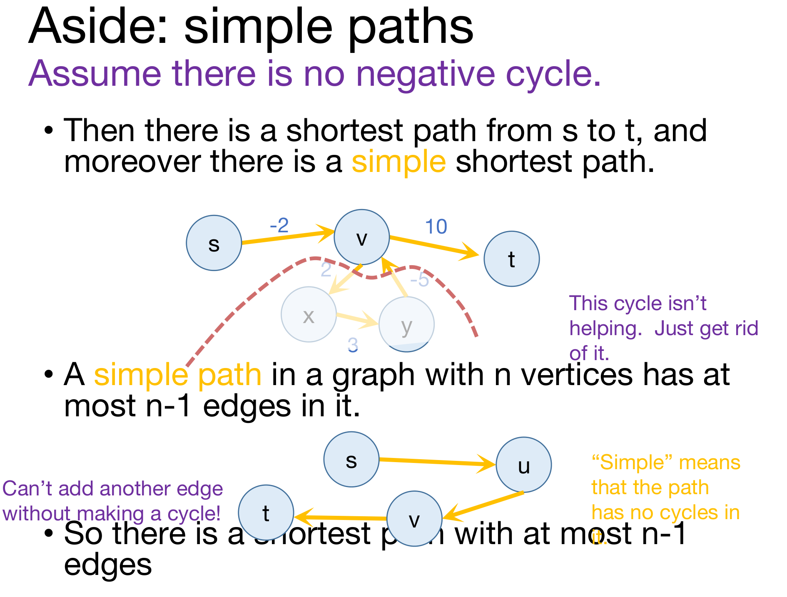
슬라이드는 음수 순환이 없다고 가정합니다.
- 그러면 \(s\)에서 \(t\)로 가는 최단 경로가 존재하고, 더 나아가 단순(simple) 최단 경로가 존재합니다.
- “단순”하다는 것은 경로 안에 순환이 없다는 뜻입니다.
- 음수 순환이 없으면 모든 순환의 비용이 0 이상이므로, 경로에 끼어 있는 순환은 도움이 되지 않습니다. 그냥 없애면 됩니다. 잘라 내도 비용이 커지지 않습니다.
- 정점이 \(n\)개인 그래프에서 단순 경로는 간선을 많아야 \(n-1\)개 가집니다.
- 단순 경로는 서로 다른 정점을 많아야 \(n\)개 지나고, 정점 \(n\)개를 잇는 간선은 \(n-1\)개이기 때문입니다. 순환을 만들지 않고서는 간선을 하나 더 붙일 수 없습니다!
- 그러므로 간선이 많아야 \(n-1\)개인 최단 경로가 존재합니다.
이것으로 결론에 한 줄이 더해집니다(슬라이드 18).
- 음수 순환이 없으면, \(d^{(n-1)}[v]\)는 최단 경로의 비용, 곧 \(\mathrm{dist}(s,v)\)와 같습니다.
- 슬라이드 아래의 주석대로 — 음수 간선 가중치는 괜찮습니다. 음수 순환만 아니면 됩니다.
기저 사례와 귀납 단계
슬라이드가 남겨 둔 두 단계를 채워 두겠습니다. 이번 강의의 갱신식은 \(v\)로 들어오는 이웃 \(u\)를 모두 훑는 형태입니다.
\[ d^{(i+1)}[v] = \min\Big(d^{(i)}[v],\ \min_{u \in v.\mathrm{inNbrs}} \big\{ d^{(i)}[u] + w(u,v) \big\}\Big) \]
모든 \(i = 0, 1, \ldots, n-1\)과 모든 정점 \(v\)에 대해, \(d^{(i)}[v]\)는 \(s\)에서 \(v\)로 가면서 간선을 많아야 \(i\)개 쓰는 경로의 최소 비용입니다. 그런 경로가 없으면 \(\infty\)입니다.
- 기저 사례 (\(i = 0\)): 간선을 0개 쓰는 경로는 \(s\)에서 \(s\)로 가는 빈 경로뿐입니다. 그러므로 최소 비용은 \(s\)에서 0, 나머지 정점에서 \(\infty\)이며, 이는 초기화 \(d^{(0)}[s] = 0\), \(d^{(0)}[v] = \infty\)와 정확히 같습니다.
- 귀납 단계 (\(i \to i+1\)): \(i\)에서 명제가 성립한다고 합시다. \(P\)를 \(s\)에서 \(v\)로 가며 간선을 많아야 \(i+1\)개 쓰는 경로 가운데 비용이 가장 작은 것이라 합니다.
- (≤ 방향) \(P\)의 간선이 \(i\)개 이하이면 귀납 가정에 의해 \(d^{(i)}[v] \le \mathrm{cost}(P)\)입니다. 간선이 정확히 \(i+1\)개이면 마지막 간선을 \((u, v)\)라 할 때 \(u\)는 \(v\)로 들어오는 이웃이고, 앞부분 \(s \to u\)는 간선이 \(i\)개이므로 귀납 가정에 의해 \(d^{(i)}[u] \le \mathrm{cost}(P_{s \to u})\), 곧 \(d^{(i)}[u] + w(u,v) \le \mathrm{cost}(P)\)입니다. 어느 경우든 갱신식의 최솟값 안에 \(\mathrm{cost}(P)\) 이하인 항이 있으므로 \(d^{(i+1)}[v] \le \mathrm{cost}(P)\)입니다.
- (≥ 방향) 갱신식의 각 항은 실제 경로의 비용입니다. \(d^{(i)}[v]\)는 간선 \(i\)개 이하 경로의 비용이고, \(d^{(i)}[u] + w(u,v)\)는 간선 \(i\)개 이하 경로 뒤에 간선 \((u,v)\)를 하나 붙인 경로의 비용입니다. 둘 다 간선 \(i+1\)개 이하 경로이므로 최소 비용 \(\mathrm{cost}(P)\)보다 작을 수 없습니다.
- 두 방향을 합치면 \(d^{(i+1)}[v] = \mathrm{cost}(P)\)입니다. 그런 경로가 아예 없으면 갱신식의 모든 항이 \(\infty\)이므로 \(d^{(i+1)}[v] = \infty\)로 맞습니다.
여기서 “경로”는 정점을 되풀이해도 되는 경로(walk)까지 포함해서 읽어야 합니다. 그렇게 읽으면 위 논증 어디에도 가중치의 부호나 순환의 유무가 쓰이지 않으므로, 명제는 음수 순환이 있어도 참입니다. 음수 순환이 없다는 가정이 필요한 곳은 마지막 단계 하나, “간선 \(n-1\)개 이하 경로의 최솟값이 곧 \(\mathrm{dist}(s,v)\)”뿐이고, 그 근거가 바로 위의 단순 경로 여담입니다.
1.9 벨만-포드* 알고리즘 (Bellman-Ford* Algorithm)
정점이 \(n\)개, 간선이 \(m\)개인 그래프 \(G = (V, E)\)에 대해, 슬라이드 19는 알고리즘을 다음과 같이 정리합니다.
Bellman-Ford*(G, s):
Initialize arrays d(0), ..., d(n-1) of length n
d(0)[v] = ∞ for all v in V
d(0)[s] = 0
For i = 0, ..., n-2:
For v in V: # 다익스트라는 특별한 정점 u 하나를 골라 그 이웃만 갱신했지만,
# 벨만-포드는 모든 정점을 갱신합니다
d(i+1)[v] ← min( d(i)[v], min_{u in v.inNbrs} { d(i)[u] + w(u,v) } )
Now, dist(s, v) = d(n-1)[v] for all v in V. # 음수 순환이 없다고 가정- 별표(*)는 일부 버전의 벨만-포드와 조금 다르다는 표시입니다. 하지만 이렇게 쓰는 것이 오늘 강의에는 교육적으로 편리합니다.
- 지난 포스트의 별표 버전은 정점 \(u\)에서 나가는 간선을 밀어 주는 형태였는데, 이번에는 정점 \(v\)로 들어오는 간선을 끌어오는 형태입니다. 한 라운드에 모든 간선이 정확히 한 번씩 쓰이고 오른쪽 변이 앞 라운드의 값 \(d^{(i)}\)만 읽는다는 점은 같습니다. 다만 지난 포스트의 밀어 주는 형태는 \(d^{(i+1)}\)을 \(\infty\)로 시작해 간선을 훑을 때만 값을 쓰므로, 들어오는 간선이 없는 정점(예컨대 들어오는 간선이 없는 \(s\))은 앞 라운드의 값을 물려받지 못하고 \(\infty\)로 남습니다. 끌어오는 형태는 \(d^{(i)}[v]\)를 항상 후보에 넣으므로 이 문제가 없고, 밀어 주는 형태도 \(d^{(i+1)}\)을 \(d^{(i)}\)의 복사본으로 시작하면 두 형태는 같은 계산이 됩니다.
지난 포스트가 다음 강의로 미뤄 둔 “교육적인 이유”가 이제 드러납니다. 라운드마다 배열을 따로 두면, 각 배열이 §1.7의 “간선 \(i\)개 이하”라는 부분 문제 하나의 답 전체가 됩니다. 이 배열들이 곧 §2에서 말할 동적 계획법의 표입니다.
1.10 구현에 관한 메모 (Note on Implementation)
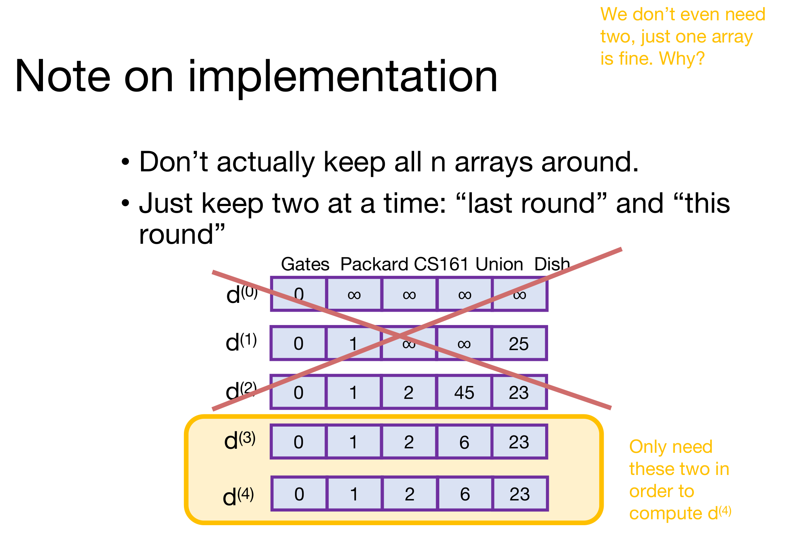
- 실제로는 \(n\)개의 배열을 모두 들고 있지 않습니다.
- 한 번에 두 개만 둡니다: “지난 라운드”와 “이번 라운드”. \(d^{(i+1)}\)은 \(d^{(i)}\)만 읽으므로, 그보다 오래된 배열은 다시 쓰이지 않습니다.
- 슬라이드 오른쪽 위의 질문 — 두 개도 필요 없고 하나면 충분합니다. 왜일까요?
마지막 질문에 답해 두겠습니다. 배열 하나 \(d\)를 두고 갱신을 제자리에서(in place) 하면, 같은 라운드 안에서 방금 낮춘 값이 곧바로 다른 정점의 갱신에 쓰일 수 있습니다. 그래도 정당성은 유지되는데, 음수 순환이 없을 때 다음 두 부등식이 늘 성립하기 때문입니다.
- 아래로는 막혀 있습니다: 유한한 \(d[v]\)는 언제나 어떤 실제 경로의 비용입니다(어떤 \(d[u]\)에 간선 하나를 붙인 값이기 때문입니다). 음수 순환이 없으면 어떤 경로의 비용도 \(\mathrm{dist}(s,v)\)보다 작을 수 없으므로 \(d[v] \ge \mathrm{dist}(s,v)\)입니다.
- 위로는 두 배열 버전의 값을 넘지 않습니다: \(i\)번째 라운드가 끝났을 때 \(d[v] \le d^{(i)}[v]\)입니다. 값은 줄어들기만 하고, \(v\)를 갱신하는 순간 읽는 \(d[u]\)들은 이미 \(d^{(i)}[u]\) 이하이므로, 갱신 결과는 \(d^{(i+1)}[v]\) 이하가 됩니다. 라운드 수에 대한 귀납법입니다.
두 부등식을 합치면 \(n-1\)라운드 뒤 \(\mathrm{dist}(s,v) \le d[v] \le d^{(n-1)}[v] = \mathrm{dist}(s,v)\)입니다. 오히려 정보가 한 라운드에 여러 간선만큼 퍼질 수 있어서 더 빨리 수렴하기도 합니다. 위 예제에서 정점을 Gates, Packard, CS161, Union, Dish 순서로 제자리 갱신하면 첫 라운드 만에 0, 1, 2, 6, 23에 닿습니다(포스트에서 직접 실행해 확인한 값입니다). 그 대신 “\(d\)는 간선 \(i\)개 이하 경로의 최소 비용”이라는 깔끔한 등식은 잃고 부등식만 남습니다. 오늘 강의가 일부러 배열을 나눠 둔 것은 바로 이 등식을 지키기 위해서입니다.
1.11 벨만-포드 정리 (Bellman-Ford Take-aways)
- 수행 시간은 \(O(mn)\)입니다. \(n\)번의 라운드마다 \(m\)개의 간선을 갱신합니다.
- 음수 간선이 있어도 잘 동작합니다.
- 음수 순환이 있으면 동작하지 않습니다. 어떤 알고리즘도 할 수 없습니다 — 음수 순환이 있으면 최단 경로가 정의되지 않기 때문입니다.
- 벨만-포드는 음수 순환을 감지할 수 있습니다! 방법은 건너뛴 슬라이드에 있습니다(§1.12).
수행 시간을 조금 더 정확히 세면, 한 라운드에서 각 정점 \(v\)는 자기 값과 들어오는 간선 \(\mathrm{indeg}(v)\)개를 훑으므로 한 라운드의 비용은 \(\sum_v \big(1 + \mathrm{indeg}(v)\big) = n + m\)이고, 이를 \(n-1\)번 하므로 \(O(n(n+m))\)입니다. 모든 정점이 \(s\)에서 도달 가능하면 \(m \ge n-1\)이므로 이는 \(O(nm)\)과 같습니다.
슬라이드는 참고로 덧붙입니다. 지금은 가중치의 크기가 너무 크지 않은 한, 수행 시간이 대략 \(O(m \log^c n)\)인 더 빠른 (하지만 복잡한) 알고리즘이 있습니다 [Bernstein–Nanongkai–Wulff-Nilsen 2022]. 엄밀히는 가중치가 정수여야 하고, 수행 시간은 가중치 절댓값의 최댓값 \(W\)에 대해 \(\log W\)에 선형으로 비례합니다.
1.12 음수 순환이 있는 벨만-포드 (BF with Negative Cycles)
슬라이드 22–25는 슬라이드 21이 “건너뛴 슬라이드를 보라”고 가리킨 음수 순환 감지 부분이며, 이 가운데 슬라이드 23에는 “SLIDE SKIPPED IN CLASS”라는 표시가 붙어 있습니다. 지난 강의에서 본 것과 같은 예제를 이번 강의의 갱신식으로 다시 보여 줍니다.
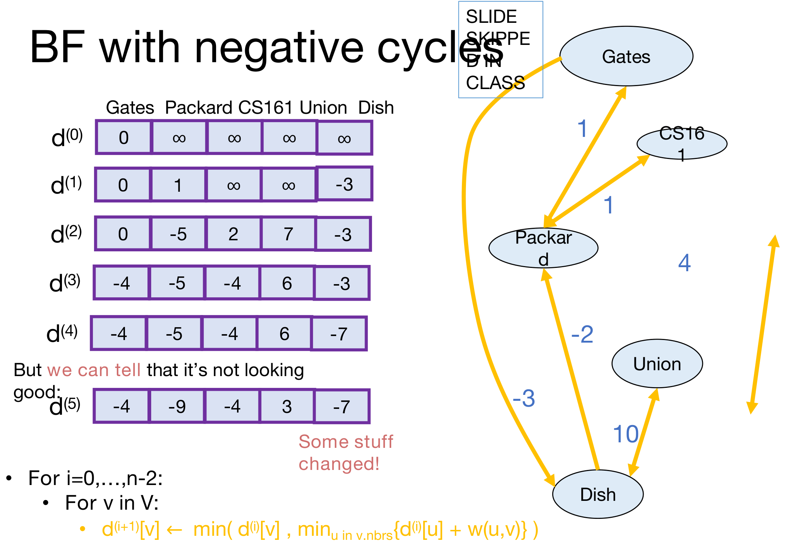
그래프는 Gates–Packard(1), Packard–CS161(1), CS161–Union(4), Union–Dish(10)가 양방향 간선이고, Gates → Dish(−3)와 Dish → Packard(−2)가 한 방향 간선입니다. 순환 Gates → Dish → Packard → Gates의 비용이 \(-3 - 2 + 1 = -4\)이므로 음수 순환이 있습니다.
| Gates | Packard | CS161 | Union | Dish | |
|---|---|---|---|---|---|
| \(d^{(0)}\) | 0 | \(\infty\) | \(\infty\) | \(\infty\) | \(\infty\) |
| \(d^{(1)}\) | 0 | 1 | \(\infty\) | \(\infty\) | −3 |
| \(d^{(2)}\) | 0 | −5 | 2 | 7 | −3 |
| \(d^{(3)}\) | −4 | −5 | −4 | 6 | −3 |
| \(d^{(4)}\) | −4 | −5 | −4 | 0 † | −7 |
| \(d^{(5)}\) | −4 | −9 | −4 | 0 † | −7 |
† 슬라이드에는 \(d^{(4)}[\text{Union}] = 6\), \(d^{(5)}[\text{Union}] = 3\)으로 적혀 있습니다. 그러나 \(d^{(3)}[\text{CS161}] = -4\)이므로 갱신식대로라면 \(d^{(4)}[\text{Union}] = \min(6,\ -4 + 4,\ -3 + 10) = 0\)이고, \(d^{(5)}[\text{Union}] = \min(0,\ -4 + 4,\ -7 + 10) = 0\)입니다. 지난 포스트에서와 마찬가지로 포스트에서 갱신식을 그대로 실행해 확인한 값이며, 나머지 칸은 모두 슬라이드와 같습니다. 이 차이는 아래 결론에 영향을 주지 않습니다.
- “상황이 좋아 보이지 않습니다!” (슬라이드 22) — 출발점 Gates의 값이 \(d^{(3)}\)에서 −4가 됩니다. 간선 3개짜리 순환 Gates → Dish → Packard → Gates를 돌아 자기 자신으로 −4에 돌아올 수 있기 때문입니다.
- 하지만 상황이 좋지 않다는 것을 알아챌 수 있습니다 (슬라이드 23) — \(d^{(5)}\)까지 한 라운드 더 계산하면 무언가 바뀝니다! Packard가 −5에서 −9로 내려갑니다.
벨만-포드에서의 음수 순환 (Negative Cycles in Bellman-Ford)
- 음수 순환이 없으면:
- 모든 것이 제대로 동작하고, \(n-1\)라운드 뒤에 안정됩니다.
- 음수 순환이 있으면:
- 모든 것이 제대로 동작하지는 않습니다…
- \(d[v]\) 값들이 계속 바뀝니다.
- 해법: 한 라운드 더 돌려서 무언가 바뀌는지 봅니다.
Bellman-Ford*(G, s):
d(0)[v] = U for all v, where U is a very large number
d(0)[s] = 0
For i = 0, ..., n-1: # n-2가 아니라 n-1까지: d(n)을 한 번 더 계산
For v in V:
d(i+1)[v] ← min( d(i)[v], min_{u in v.inNeighbors} { d(i)[u] + w(u,v) } )
If d(n-1) != d(n): # 마지막 한 라운드에서 무언가 바뀌었다면
Return NEGATIVE CYCLE ☹
Otherwise, dist(s, v) = d(n-1)[v]수행 시간은 여전히 \(O(mn)\)입니다. 라운드가 하나 늘었을 뿐입니다.
판정이 옳은 이유는 \(\infty\)로 초기화한 경우를 기준으로 하면 §1.8의 명제로 양쪽 모두 확인됩니다. (\(U\)로 초기화한 경우는 아래 callout에서 보듯 명제를 조금 고쳐 읽으면 같은 결론이 나옵니다.)
- 음수 순환이 없으면 \(d^{(n)} = d^{(n-1)}\)입니다. \(d^{(n)}[v]\)는 간선 \(n\)개 이하 경로의 최솟값인데, 단순 경로로 충분하므로 그 값은 간선 \(n-1\)개 이하 경로의 최솟값 \(d^{(n-1)}[v]\)와 같습니다.
- (\(s\)에서 닿는) 음수 순환이 있으면 \(d^{(n)} \ne d^{(n-1)}\)입니다. 거꾸로 \(d^{(n)} = d^{(n-1)}\)이라면, \(d^{(i+1)}\)은 \(d^{(i)}\)만으로 정해지므로 이후 모든 라운드에서도 값이 멈춰 있어야 합니다. 그런데 음수 순환 위의 정점 \(v\)에 대해서는 그 순환을 더 많이 도는 경로가 계속 더 싸지므로 \(d^{(k)}[v]\)가 \(k\)와 함께 한없이 작아져야 합니다. 모순입니다.
슬라이드 25는 초기값을 \(\infty\)가 아니라 아주 큰 수 \(U\)로 바꾸어 적었지만, 그 이유는 따로 밝히지 않습니다. 이 차이에서 생기는 결과 두 가지를 짚어 둡니다(슬라이드에는 없는 분석입니다).
- \(U\)가 경로 비용보다 크기만 해서는 부족합니다. \(U\)에서 출발한 정점 \(x\)는 \(U + (x\text{에서 } v\text{로 가는 경로의 비용})\)이라는 후보를 만들고, 그 경로 비용이 음수이면 \(s\)에서 도달 가능한 \(v\)의 참 거리보다 작아질 수 있습니다. 예컨대 간선이 \(s \to v\)(10)와 \(x \to v\)(−10)뿐이고 \(U = 11\)이면 \(d[v] = \min(10,\ 11 - 10) = 1\)이 되어 답이 틀리는데, 값이 안정되어 있으니 경보도 울리지 않습니다. 가중치 절댓값이 \(W\) 이하이고 음수 순환이 없을 때 \(U > 2(n-1)W\)로 잡으면, 도달 가능한 \(v\)에서는 \(U + c \ge U - (n-1)W > (n-1)W \ge \mathrm{dist}(s,v)\)이므로 답이 보존되고, 도달할 수 없는 정점의 값은 \((n-1)W\)보다 커서 “도달할 수 없음”으로 구별됩니다.
- 이때 §1.8의 명제는 “\(d^{(i)}[v]\)는 모든 시작 정점 \(x\)에 대한 \(d^{(0)}[x] + (x\text{에서 } v\text{로 가는 간선 } i\text{개 이하 경로의 비용})\)의 최솟값”으로 고쳐 읽어야 하며, 위의 두 판정 논증은 이렇게 읽어도 그대로 성립합니다.
- \(\infty\)로 시작하면 \(\infty + w = \infty\)이므로, 지난 포스트의 경고대로 \(s\)에서 닿지 않는 음수 순환은 값이 끝까지 \(\infty\)로 남아 감지되지 않았습니다. 반면 유한한 \(U\)로 시작하면 그런 순환 위의 정점 값도 \(U\)에서 출발해 한 바퀴 돌 때마다 줄어드므로, 한 라운드 더 돌렸을 때 바뀌고 감지됩니다. 마치 모든 정점으로 비용 \(U\)짜리 간선을 내보내는 가상의 출발점을 하나 더 둔 것과 같습니다.
1.13 이 강의의 나머지를 위한 핵심 (Important Thing about B-F for the Rest of This Lecture)
슬라이드 26은 §1.7의 문장을 표와 그래프 옆에 다시 띄웁니다.
- \(d^{(i)}[v]\)는 \(s\)와 \(v\) 사이에서 간선을 많아야 \(i\)개 쓰는 최단 경로의 비용과 같습니다.
벨만-포드가 하는 일은 결국 “간선 0개 이하”, “간선 1개 이하”, …, “간선 \(n-1\)개 이하”라는 점점 커지는 부분 문제들의 답을 차례로 표에 적는 것입니다. 이 시각으로 보면 벨만-포드는 다음 절의 주제인 동적 계획법의 한 예가 됩니다.
2. 동적 계획법 (Bellman-Ford Is an Example of… Dynamic Programming!)
슬라이드 27은 이 절의 계획을 세웁니다.
- 동적 계획법의 예:
- 피보나치 수
- (그리고 벨만-포드)
- 동적 계획법이란 정확히 무엇인가?
- 그리고 왜 “동적 계획법”이라고 부를까?
- 또 하나의 예: 플로이드-워셜 알고리즘
- “모든 쌍(all-pairs)” 최단 경로 알고리즘
2.1 피보나치 수를 계산하지 않는 법 (Pre-Lecture Exercise: How Not to Compute Fibonacci Numbers)
- 정의: \(F(n) = F(n-1) + F(n-2)\), 단 \(F(1) = F(2) = 1\).
- 처음 몇 개는 다음과 같습니다: \(1, 1, 2, 3, 5, 8, 13, 21, 34, 55, 89, 144, \ldots\)
- 질문: \(n\)이 주어졌을 때 \(F(n)\)은 무엇인가?
2.2 후보 알고리즘 (Candidate Algorithm)
정의를 그대로 코드로 옮기면 다음과 같습니다. 아래 코드에서는 \(F(0) = 0\), \(F(1) = 1\)을 기저로 쓰며, 이는 위 정의와 같은 수열을 줍니다(\(F(2) = F(1) + F(0) = 1\)).
def Fibonacci(n):
if n == 0:
return 0
if n == 1:
return 1
return Fibonacci(n - 1) + Fibonacci(n - 2) # 두 하위 호출이 같은 부분 문제를 각자 다시 풉니다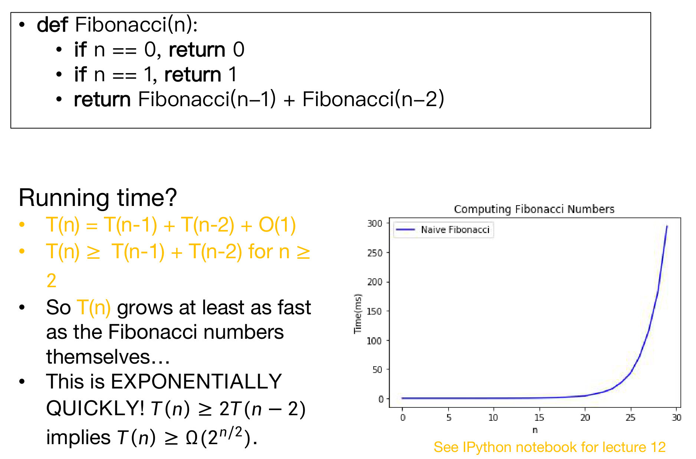
수행 시간은 얼마일까요? 슬라이드의 논증을 한 단계씩 풀어 보겠습니다.
- 호출 한 번은 상수 시간의 일을 하고 두 번 재귀하므로 \[T(n) = T(n-1) + T(n-2) + O(1), \qquad T(0),\ T(1) = O(1).\]
- 상수항을 버리면, \(n \ge 2\)에 대해 \(T(n) \ge T(n-1) + T(n-2)\)입니다.
- 이 부등식은 피보나치 점화식과 같은 꼴이므로, \(T(n)\)은 적어도 피보나치 수만큼 빠르게 자랍니다. (귀납법으로 \(T(n) \ge c\,F(n)\), \(c = \min(T(1), T(2))\)를 보일 수 있습니다.)
- 이것은 지수적으로 빠릅니다! 정확히는, \(T(n-2) \ge 0\)이므로 2번의 부등식에서 \(n \ge 2\)일 때 \(T(n) \ge T(n-1)\), 곧 \(T(1) \le T(2) \le T(3) \le \cdots\)입니다. 따라서 \(n \ge 3\)이면 \(T(n-1) \ge T(n-2)\)를 대입해 \[T(n) \ge T(n-1) + T(n-2) \ge 2\,T(n-2).\]
- 이를 인자가 2나 3에 닿을 때까지, 곧 \(\lfloor n/2 \rfloor - 1\)번 되풀이하면 \[ \begin{aligned} T(n) &\ge 2\,T(n-2) \ge 4\,T(n-4) \ge \cdots \\ &\ge 2^{\lfloor n/2 \rfloor - 1}\, \min\big(T(2), T(3)\big) = \Omega\big(2^{n/2}\big). \end{aligned} \]
\(2^{n/2} \approx 1.414^n\)은 하한일 뿐입니다. 3번의 하한에, 호출 수가 \(2F(n+1)-1\)(§2.3)이고 호출마다 \(O(1)\)이라는 상한을 더하면 \(T(n) = \Theta(F(n))\), 곧 실제 증가율은 피보나치 수 자체의 증가율(황금비 \(\varphi = (1+\sqrt5)/2 \approx 1.618\)의 거듭제곱)입니다. 그래프의 파란 곡선이 \(n = 20\) 근처에서 갑자기 솟는 것이 이 지수 증가의 모습입니다.
2.3 무슨 일이 일어나고 있을까요: Fib(8) (What’s Going On? Consider Fib(8))
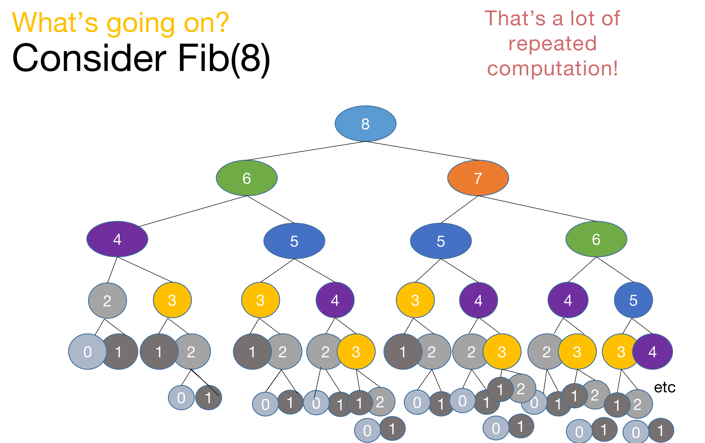
호출 트리를 그려 보면 문제가 보입니다. 반복 계산이 아주 많습니다!
Fibonacci(6)은 두 번,Fibonacci(5)는 세 번,Fibonacci(4)는 다섯 번 계산됩니다. 같은 값을 매번 처음부터 다시 구합니다.- 일반적으로
Fibonacci(n)이 만드는 호출의 총수는 \(2F(n+1) - 1\)입니다. 호출 수를 \(C(n)\)이라 하면 \(C(0) = C(1) = 1\), \(C(n) = 1 + C(n-1) + C(n-2)\)이고, 이 점화식의 해가 \(2F(n+1) - 1\)입니다. \(n = 8\)이면 \(2 \cdot 34 - 1 = 67\)번입니다(포스트에서 직접 세어 확인한 값입니다).
그런데 서로 다른 부분 문제는 Fibonacci(0)부터 Fibonacci(8)까지 9개뿐입니다. 67번의 호출 가운데 대부분이 이미 구한 답을 다시 구하는 데 쓰입니다.
2.4 이렇게 하면 더 낫지 않을까요 (Maybe This Would Be Better)
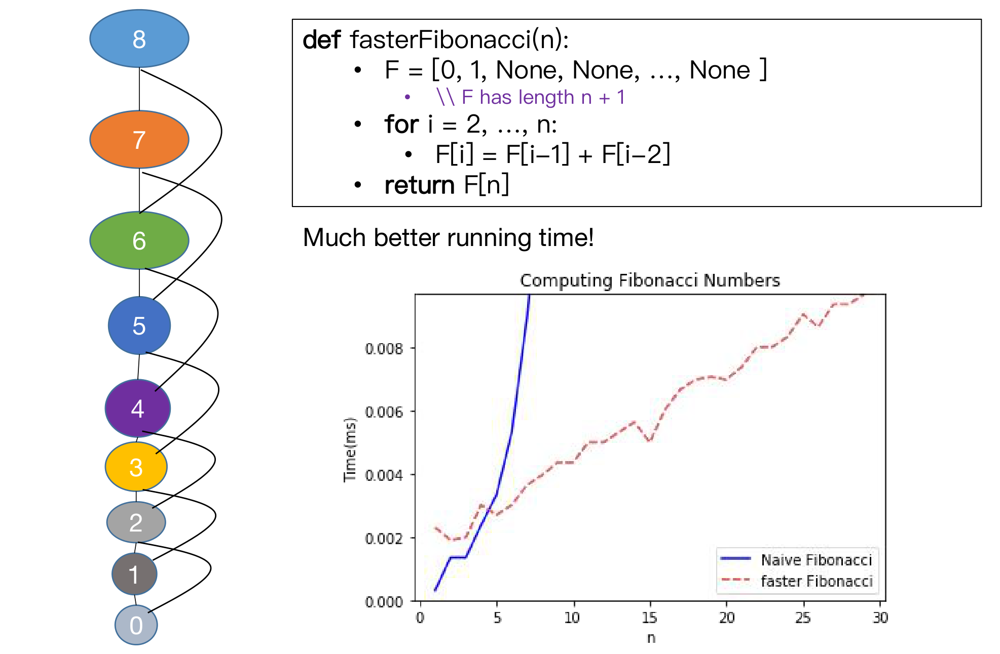
부분 문제가 9개뿐이라면, 각각을 한 번씩만 풀어 표에 적어 두면 됩니다.
def fasterFibonacci(n):
F = [0, 1] + [None] * (n - 1) # F has length n + 1: [0, 1, None, None, ..., None]
for i in range(2, n + 1):
F[i] = F[i - 1] + F[i - 2] # 이미 표에 적힌 작은 문제의 답을 읽어 큰 문제를 풉니다
return F[n]- 루프가 \(n-1\)번 돌고 매번 덧셈 한 번을 하므로 \(O(n)\)번의 연산입니다. 훨씬 나은 수행 시간입니다!
- 왼쪽 그림처럼 호출 트리의 같은 노드를 하나로 합치면, 남는 것은 \(n+1\)개의 노드가 한 줄로 이어진 구조입니다. 각 노드는 바로 아래 두 노드에만 의존합니다.
여기서 \(O(n)\)은 덧셈 횟수입니다. \(F(n)\)은 \(n\)에 비례하는 자릿수를 가지므로 \(n\)이 아주 크면 덧셈 한 번도 상수 시간이 아니게 됩니다. 슬라이드의 측정은 \(n \le 30\) 범위라 수가 작아 이 효과가 보이지 않으며, 핵심은 같은 부분 문제를 다시 풀지 않음으로써 지수 시간을 다항 시간으로 바꿨다는 데 있습니다.
슬라이드 32는 큰 글씨 한 줄로 정리합니다. 이것이 바로 동적 계획법(Dynamic Programming)의 예였습니다!
2.5 동적 계획법이란 (What Is Dynamic Programming?)
- 알고리즘 설계 패러다임(algorithm design paradigm)입니다.
- 분할 정복(divide-and-conquer)이 알고리즘 설계 패러다임인 것과 마찬가지입니다.
- 보통 최적화 문제(optimization problem)를 풀 때 씁니다.
- 예: 최단 경로
- (피보나치 수는 최적화 문제가 아니지만, 그래도 동적 계획법의 좋은 예입니다…)
2.6 동적 계획법의 요소 (Elements of Dynamic Programming)
1) 최적 부분 구조 (Optimal Sub-structure)
- 큰 문제가 부분 문제(sub-problem)들로 쪼개집니다.
- 피보나치: \(i \le n\)에 대한 \(F(i)\)
- 벨만-포드: \(i \le n\)에 대해, 간선을 많아야 \(i\)개 쓰는 최단 경로
- 어떤 문제의 해를 더 작은 부분 문제들의 해로 표현할 수 있습니다.
- 피보나치: \[F(i+1) = F(i) + F(i-1)\]
- 벨만-포드: \[d^{(i+1)}[v] \leftarrow \min\Big\{d^{(i)}[v],\ \min_{u}\big\{d^{(i)}[u] + w(u,v)\big\}\Big\}\]
- \(d^{(i)}[v]\) — \(s\)에서 \(v\)까지 간선 \(i\)개 이하 최단 경로
- \(d^{(i)}[u]\) — \(s\)에서 \(u\)까지 간선 \(i\)개 이하 최단 경로
슬라이드는 식의 두 항에 화살표를 그어 각각이 이미 풀어 둔 더 작은 문제의 답이라는 것을 강조합니다. 왼쪽의 큰 문제(간선 \(i+1\)개 이하)를 오른쪽의 작은 문제들(간선 \(i\)개 이하)의 최적해만으로 조립할 수 있다는 것, 이것이 최적 부분 구조입니다. 벨만-포드에서 이 성질의 근거는 §1.8 귀납 단계의 ≤ 방향 — 최적 경로에서 마지막 간선 앞부분을 간선 \(i\)개 이하의 최적 경로로 바꿔 끼워도 비용이 늘지 않는다 — 이었습니다.
2) 중복되는 부분 문제 (Overlapping Sub-problems)
- 부분 문제들이 겹칩니다.
- 피보나치:
- \(F[i+1]\)과 \(F[i+2]\)가 둘 다 직접 \(F[i]\)를 씁니다.
- 그리고 수많은 \(F[i+x]\)가 간접적으로 \(F[i]\)를 씁니다.
- 벨만-포드:
- \(d^{(i+1)}\)의 여러 칸이 직접 \(d^{(i)}[v]\)를 씁니다. (\(v\)에서 나가는 간선의 끝점마다, 그리고 \(v\) 자신이 씁니다.)
- 그리고 수많은 \(d^{(i+x)}\)의 칸이 간접적으로 \(d^{(i)}[v]\)를 씁니다.
- 피보나치:
- 이는 부분 문제를 한 번만 풀고 답을 저장해 두면 시간을 아낄 수 있다는 뜻입니다.
- 최적 부분 구조(optimal substructure): 부분 문제들의 최적해를 이용해 원래 문제의 최적해를 찾을 수 있습니다.
- 중복되는 부분 문제(overlapping subproblems): 같은 부분 문제가 계속해서 다시 나타납니다.
이 두 성질을 이용해 동적 계획법 알고리즘을 설계합니다.
- 더 작은 문제들의 해를 담은 표를 유지합니다.
- 표에 있는 해를 이용해 더 큰 문제를 풉니다.
- 마지막에 그동안 모은 정보를 이용해 전체 문제의 해를 찾습니다.
두 요소가 각각 무엇을 보장하는지 구분해 두면 좋습니다. 최적 부분 구조는 표를 채우는 규칙(점화식)이 옳다는 것을, 중복되는 부분 문제는 표를 만드는 것이 이득이라는 것을 보장합니다. 분할 정복도 최적 부분 구조와 닮은 재귀 구조를 쓰지만, 병합 정렬처럼 부분 문제가 서로 겹치지 않으면 저장해 둘 이유가 없습니다.
2.7 동적 계획법 알고리즘을 생각하고 구현하는 두 방법 (Two Ways to Think About and/or Implement DP Algorithms)
- 하향식 (top down)
- 상향식 (bottom up)
슬라이드 37–40은 Larson 서명이 있는 만화 한 컷을 곁들입니다. 작은 물고기 떼와 그보다 훨씬 큰 물고기 한 마리를 그린 그림으로, 상향식 슬라이드에서는 작은 물고기 떼가 아래, 큰 물고기가 위에 오도록, 하향식 슬라이드에서는 반대로 큰 물고기가 아래, 작은 물고기 떼가 위에 오도록 같은 그림을 돌려 놓았습니다. 작은 문제와 큰 문제 가운데 어느 쪽에서 출발하느냐를 그림의 방향으로 나타낸 것입니다.
2.8 상향식 접근 (Bottom-Up Approach)
방금 본 방식이 상향식입니다.
| 단계 | 피보나치 | 벨만-포드 |
|---|---|---|
| 작은 문제부터 먼저 풉니다 | \(F[0], F[1]\)을 채웁니다 | \(d^{(0)}\)을 채웁니다 |
| 그다음 더 큰 문제 | \(F[2]\)를 채웁니다 | \(d^{(1)}\)을 채웁니다 |
| … | … | … |
| 그다음 더 큰 문제 | \(F[n-1]\)을 채웁니다 | \(d^{(n-2)}\)를 채웁니다 |
| 마지막으로 진짜 문제를 풉니다 | \(F[n]\)을 채웁니다 | \(d^{(n-1)}\)을 채웁니다 |
상향식에서 중요한 것은 채우는 순서입니다. 어떤 칸을 채울 때 그 칸이 의존하는 칸이 이미 채워져 있어야 합니다. 피보나치에서는 인덱스 순서, 벨만-포드에서는 라운드 순서가 그 조건을 만족합니다.
2.9 하향식 접근 (Top-Down Approach)
- 재귀 알고리즘처럼 생각합니다.
- 큰 문제를 풀려면:
- 재귀해서 더 작은 문제들을 풉니다.
- 그 문제들도 재귀해서 더 작은 문제들을 풉니다.
- 등등…
- 그 문제들도 재귀해서 더 작은 문제들을 풉니다.
- 재귀해서 더 작은 문제들을 풉니다.
- 분할 정복과의 차이:
- 이미 푼 작은 문제들을 기록해 두어, 같은 문제를 두 번 푸는 일을 막습니다.
- 이를 메모이제이션(memo-ization)이라고 부릅니다.
하향식 피보나치 (Example of Top-Down Fibonacci)
n = 8
F = [0, 1] + [None] * (n - 1) # define a global list F = [0, 1, None, None, ..., None]
def Fibonacci(n):
if F[n] is not None: # 이미 푼 부분 문제라면 저장된 답을 그대로 돌려줍니다
return F[n]
else:
F[n] = Fibonacci(n - 1) + Fibonacci(n - 2) # 처음 푸는 문제만 재귀로 풀고 F에 적어 둡니다
return F[n]
print(Fibonacci(8)) # 21- 슬라이드의 메모지대로, 메모이제이션은 이미 한 일을 (F 안에) 기록해 둡니다.
- 단순 재귀 코드와 비교하면 달라진 것은 “표를 먼저 확인하고, 계산했으면 표에 적는다”는 두 줄뿐입니다.
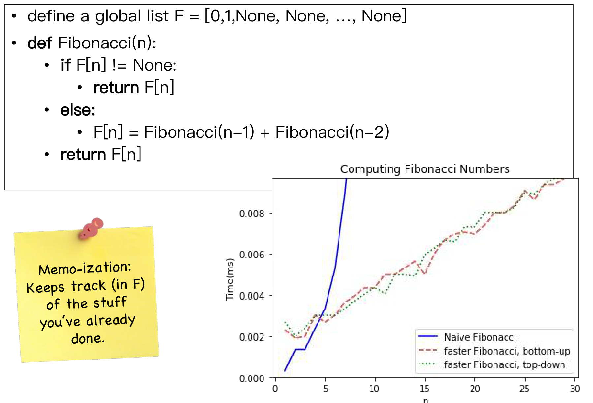
메모이제이션 시각화 (Memo-ization Visualization)
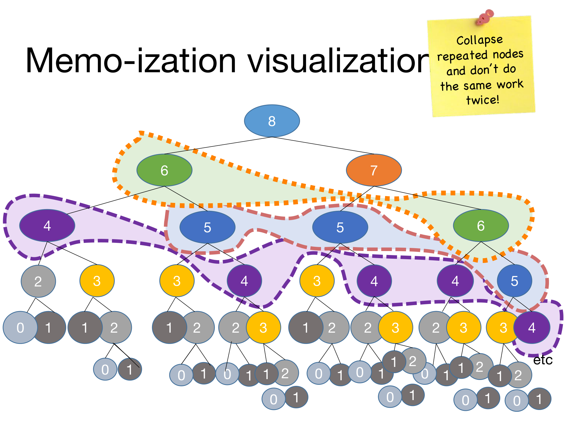
- 되풀이되는 노드를 하나로 접고, 같은 일을 두 번 하지 마세요!
- 하지만 그 밖에는 예전의 재귀 알고리즘과 똑같이 다루세요. (슬라이드 43)
슬라이드 43은 이렇게 접은 결과가 슬라이드 31의 한 줄짜리 구조, 곧 8부터 0까지 노드가 이어지고 각 노드가 바로 아래 두 노드를 가리키는 그림과 같다는 것을 보여 줍니다. 하향식과 상향식은 같은 부분 문제 그래프를 다른 순서로 훑을 뿐입니다. 실제로 위 하향식 코드로 Fibonacci(8)을 부르면 함수 호출은 15번(\(= 2 \cdot 8 - 1\))으로, 단순 재귀의 67번과 대조됩니다. \(F[2]\)부터 \(F[8]\)까지 일곱 칸을 처음 채울 때마다 하위 호출이 두 번씩 생기고, 그 밖의 호출은 표를 읽고 바로 돌아오기 때문입니다.
| 상향식 | 하향식 (메모이제이션) | |
|---|---|---|
| 생각하는 방향 | 작은 문제 → 큰 문제 | 큰 문제 → 작은 문제 (재귀) |
| 채우는 순서 | 미리 정한 순서(인덱스, 라운드) | 재귀가 필요로 하는 순서대로 |
| 푸는 부분 문제 | 표의 모든 칸 | 실제로 필요한 칸만 |
| 이 강의의 예 | fasterFibonacci, 벨만-포드, 플로이드-워셜 |
메모이제이션 피보나치 |
2.10 무엇을 배웠나 (What Have We Learned?)
- 알고리즘 설계의 패러다임입니다.
- 최적 부분 구조를 이용합니다.
- 중복되는 부분 문제를 이용합니다.
- 상향식으로도, 하향식으로도 구현할 수 있습니다.
- 꽤 상식적인 생각에 붙인 그럴듯한 이름입니다: 해야 할 필요가 없다면 같은 일을 두 번 하지 마세요!
2.11 왜 “동적 계획법”일까요 (Why “Dynamic Programming”?)
- “Programming”은 최적의 “프로그램(program)”을 찾는다는 뜻입니다.
- 예컨대 최단 경로는 하나의 계획(plan), 곧 프로그램입니다.
- “Dynamic”은 여러 단계(multi-stage)로 이루어진다는 뜻입니다.
- 하지만 그냥 멋지게 들리는 이름이기도 합니다. 슬라이드는 “Manipulating computer code in an action movie?”라는 문구와 함께 액션 영화 장면 사진 세 장(손바닥을 들어 날아오는 총알을 허공에 멈춰 세운 장면, 키보드를 두드리는 장면, 허공에 뜬 화면을 손으로 조작하는 장면)을 곁들여, “프로그래밍”이라는 말이 주는 인상과 실제 뜻이 다르다는 것을 농담처럼 짚습니다.
이름의 유래는 이렇습니다(슬라이드 46).
- Richard Bellman이 1950년대에 이 이름을 지었습니다.
- 당시 그는 RAND 연구소(RAND Corporation)에서 일하고 있었는데, 이 연구소는 사실상 공군(Air Force)을 위해 일하고 있었고, 정부 과제가 예산을 따려면 화려한 이름이 필요했습니다.
- Bellman의 자서전에 따르면, 그는 “dynamic”이라는 단어는 나쁜 뜻으로 쓰일 수가 없다고 보았고, 그래서 동적 계획법이 좋은 이름이라고 생각했다고 합니다. 그의 표현으로 그것은 “something not even a Congressman could object to”, 곧 국회의원조차 반대할 수 없는 이름이었습니다.
“Programming”이 오늘날의 코딩이 아니라 계획 수립을 뜻한다는 점은 선형 계획법(linear programming)의 “programming”과 같은 쓰임입니다. 이 블로그가 dynamic programming을 “동적 프로그래밍”이 아닌 동적 계획법으로 옮기는 이유이기도 합니다.
3. 플로이드-워셜 알고리즘 (Floyd-Warshall Algorithm)
3.1 모든 쌍 최단 경로 (All-Pairs Shortest Paths)
슬라이드는 플로이드-워셜을 동적 계획법의 또 다른 예로 소개합니다.
- 이것은 모든 쌍 최단 경로(All-Pairs Shortest Paths, APSP) 알고리즘입니다.
- 곧, 그래프의 모든 정점 쌍 \(u, v\)에 대해 \(u\)에서 \(v\)로 가는 최단 경로를 알고 싶습니다.
- 특별한 출발점 \(s\) 하나에서만이 아닙니다.
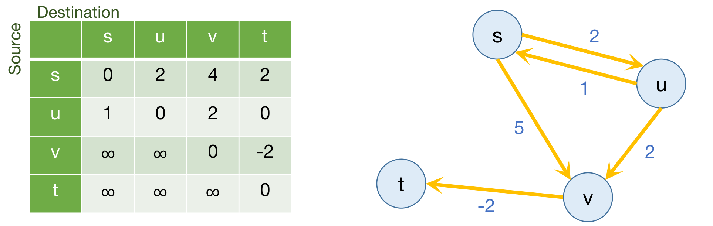
예제 그래프의 간선은 \(s \to u\)(2), \(u \to s\)(1), \(s \to v\)(5), \(u \to v\)(2), \(v \to t\)(−2)이고, 답은 다음 \(4 \times 4\) 표입니다(행이 출발점, 열이 도착점).
| 출발 \ 도착 | \(s\) | \(u\) | \(v\) | \(t\) |
|---|---|---|---|---|
| \(s\) | 0 | 2 | 4 | 2 |
| \(u\) | 1 | 0 | 2 | 0 |
| \(v\) | \(\infty\) | \(\infty\) | 0 | −2 |
| \(t\) | \(\infty\) | \(\infty\) | \(\infty\) | 0 |
3.2 순진한 해법 (Naïve Solution)
음수 간선 가중치를 다루고 싶다면, 가장 먼저 떠오르는 방법은 다음과 같습니다.
- \(G\)의 모든 \(s\)에 대해:
- \(s\)에서 시작해 \(G\) 위에서 벨만-포드를 돌립니다.
- 시간은 \(O(n \cdot nm) = O(n^2 m)\)입니다.
- \(m = n^2\)이면 \(n^4\)만큼 나빠질 수 있습니다.
더 잘할 수 있을까요? 슬라이드의 괄호 — “음수 간선을 다루고 싶다면” — 는 가중치가 음이 아니라면 다른 선택지가 있다는 뜻으로 읽힙니다. 지난 강의의 다익스트라를 피보나치 힙으로 \(n\)번 돌리면 \(O(n(n\log n + m)) = O(n^2\log n + nm)\)입니다. 그러나 음수 간선이 하나라도 있으면 그 길은 막히므로, 벨만-포드를 \(n\)번 돌리는 \(O(n^2 m)\)이 출발점입니다.
3.3 최적 부분 구조 (Optimal Substructure)
동적 계획법을 쓰려면 먼저 부분 문제를 정해야 합니다. 플로이드-워셜의 착상은 정점에 번호를 붙이는 데서 시작합니다.
- 정점에 \(1, 2, \ldots, n\)으로 번호를 붙입니다.
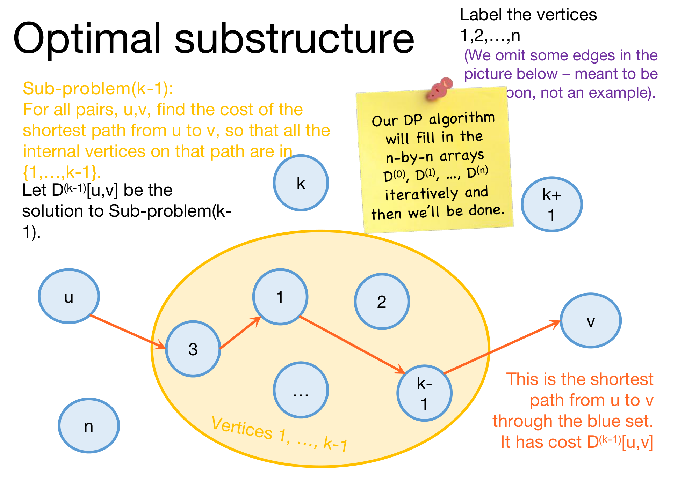
- 부분 문제 \((k-1)\): 모든 쌍 \(u, v\)에 대해, \(u\)에서 \(v\)로 가는 경로 가운데 내부 정점(internal vertices, 경로의 처음과 끝을 뺀 정점)이 모두 \(\{1, \ldots, k-1\}\) 안에 있는 최단 경로의 비용을 찾습니다.
- \(D^{(k-1)}[u,v]\)를 부분 문제 \((k-1)\)의 해라고 합시다.
- 이 동적 계획법 알고리즘은 \(n \times n\) 배열 \(D^{(0)}, D^{(1)}, \ldots, D^{(n)}\)을 차례로 채우고, 그러면 끝납니다.
이 부분 문제가 잘 고른 것인 이유는 양 끝에 있습니다.
- \(k - 1 = 0\)이면 내부 정점이 하나도 없어야 하므로 간선 하나짜리 경로만 허용됩니다. 그래프에서 바로 읽을 수 있습니다.
- \(k - 1 = n\)이면 아무 정점이나 거칠 수 있으므로 원래의 모든 쌍 최단 경로 문제 그 자체입니다.
벨만-포드가 “쓸 수 있는 간선의 개수”를 0부터 하나씩 늘려 갔다면, 플로이드-워셜은 “거칠 수 있는 정점의 집합”을 \(\emptyset\)부터 하나씩 늘려 갑니다. 질문은 이제 하나입니다. \(D^{(k-1)}\)을 이용해 \(D^{(k)}[u,v]\)를 어떻게 구할까요?
3.4 D⁽ᵏ⁻¹⁾로 D⁽ᵏ⁾를 구하는 법 (How Can We Find D⁽ᵏ⁾[u,v] Using D⁽ᵏ⁻¹⁾?)
\(D^{(k)}[u,v]\)는 \(u\)에서 \(v\)로 가는 경로 가운데 내부 정점이 모두 \(\{1, \ldots, k\}\) 안에 있는 최단 경로의 비용입니다. 허용 집합이 \(\{1,\ldots,k-1\}\)에서 정점 \(k\) 하나만큼 커졌으므로, 그 최단 경로가 \(k\)를 쓰느냐 안 쓰느냐로 경우가 나뉩니다.
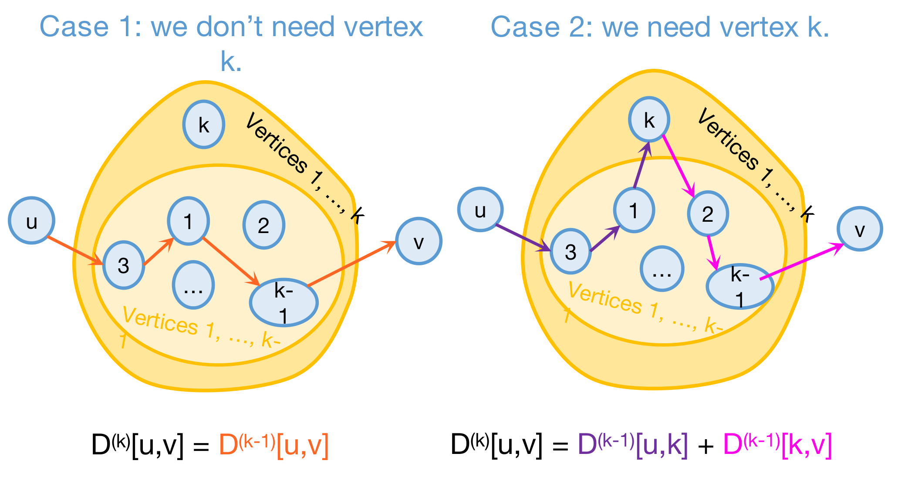
경우 1: 정점 \(k\)가 필요 없는 경우 (Case 1: We Don’t Need Vertex k)
- 최단 경로가 \(k\)를 거치지 않으면, 그 내부 정점은 모두 \(\{1, \ldots, k-1\}\) 안에 있습니다.
- 이 경로는 전에도 최단이었으므로, 지금도 여전히 최단입니다. \[D^{(k)}[u,v] = D^{(k-1)}[u,v]\]
경우 2: 정점 \(k\)가 필요한 경우 (Case 2: We Need Vertex k)
- 음수 순환이 없다고 가정합니다.
- 그러면 일반성을 잃지 않고(WLOG) \(\{1,\ldots,k\}\)를 거치는 \(u\)에서 \(v\)로의 최단 경로는 단순 경로라고 할 수 있습니다(§1.8의 여담과 같은 논리입니다).
- 그 경로가 \(k\)를 지난다면, 단순 경로이므로 \(k\)를 정확히 한 번 지나고, 다음 모양이어야 합니다. \[u \xrightarrow{\ \text{내부 정점} \,\subseteq\, \{1,\ldots,k-1\}\ } k \xrightarrow{\ \text{내부 정점} \,\subseteq\, \{1,\ldots,k-1\}\ } v\]
- 앞부분(보라)은 \(\{1, \ldots, k-1\}\)을 거치는 \(u\)에서 \(k\)로의 최단 경로입니다.
- 최단 경로의 부분 경로도 최단 경로이기 때문입니다. 앞부분보다 싼 경로가 있다면 그것으로 바꿔 끼워 전체를 더 싸게 만들 수 있으니까요.
- 뒷부분(분홍)도 마찬가지로 \(\{1, \ldots, k-1\}\)을 거치는 \(k\)에서 \(v\)로의 최단 경로입니다. \[D^{(k)}[u,v] = D^{(k-1)}[u,k] + D^{(k-1)}[k,v]\]
점화식
두 경우 가운데 어느 쪽이 실제로 일어나는지 미리 알 수 없으므로, 둘 다 계산해 작은 쪽을 고릅니다.
\[ D^{(k)}[u,v] = \min\Big\{ \underbrace{D^{(k-1)}[u,v]}_{\text{경우 1: } \{1,\ldots,k-1\}\text{을 거치는 최단 경로의 비용}},\ \underbrace{D^{(k-1)}[u,k] + D^{(k-1)}[k,v]}_{\text{경우 2: } u\to k,\ k \to v\text{ 최단 경로를 이은 비용}} \Big\} \]
슬라이드 57은 이 점화식에서 동적 계획법의 두 요소를 찾아 줍니다.
- 최적 부분 구조: 작은 문제들(\(D^{(k-1)}\))의 해로 큰 문제(\(D^{(k)}\))를 풀 수 있습니다.
- 중복되는 부분 문제: \(D^{(k-1)}[k,v]\) 하나가 수많은 서로 다른 \(u\)에 대한 \(D^{(k)}[u,v]\)를 계산하는 데 쓰입니다. 실제로 \(D^{(k)}\)를 채우는 동안 \(D^{(k-1)}\)의 \(k\)행과 \(k\)열에 있는 각 칸이 \(n\)번씩 다시 읽힙니다.
그리고 슬라이드 58의 말대로, 동적 계획법 패러다임을 쓰면 이것만으로 곧바로 알고리즘이 나옵니다!
3.5 플로이드-워셜 알고리즘 (Floyd-Warshall Algorithm)
Floyd-Warshall(G):
Initialize n-by-n arrays D(k) for k = 0, ..., n
D(k)[u,u] = 0 for all u, for all k
D(k)[u,v] = ∞ for all u ≠ v, for all k
D(0)[u,v] = weight(u,v) for all (u,v) in E # 기저 사례: 다른 정점을 하나도 거치지 않는 경로는
# u에서 v로 바로 가는 간선뿐입니다
For k = 1, ..., n:
For pairs u,v in V²:
D(k)[u,v] = min{ D(k-1)[u,v], D(k-1)[u,k] + D(k-1)[k,v] }
Return D(n)이것은 상향식 동적 계획법 알고리즘입니다. 표 \(D^{(k)}\)를 \(k\)가 작은 쪽부터 채우고, 각 칸은 바로 앞 표만 읽습니다.
예제에 적용해 보기
슬라이드에는 없지만, §3.1의 예제에 알고리즘을 그대로 돌려 보면 점화식이 무엇을 하는지 잘 보입니다. 번호는 \(s = 1\), \(u = 2\), \(v = 3\), \(t = 4\)로 붙였습니다(포스트에서 정한 순서입니다). 초기 표 \(D^{(0)}\)은 간선 가중치 그대로입니다.
| \(D^{(0)}\) | \(s\) | \(u\) | \(v\) | \(t\) |
|---|---|---|---|---|
| \(s\) | 0 | 2 | 5 | \(\infty\) |
| \(u\) | 1 | 0 | 2 | \(\infty\) |
| \(v\) | \(\infty\) | \(\infty\) | 0 | −2 |
| \(t\) | \(\infty\) | \(\infty\) | \(\infty\) | 0 |
- \(k = 1\) (\(s\)를 거쳐도 됨): 아무것도 바뀌지 않습니다. \(s\)로 들어오는 간선은 \(u \to s\)뿐인데, \(u \to s \to v\)는 \(1 + 5 = 6\)으로 직통 2보다 비쌉니다.
- \(k = 2\) (\(u\)까지 거쳐도 됨): \(D[s,v]\)가 \(\min(5,\ D^{(1)}[s,u] + D^{(1)}[u,v]) = \min(5,\ 2 + 2) = 4\)로 바뀝니다.
- \(k = 3\) (\(v\)까지 거쳐도 됨): \(t\)로 가는 길이 처음 열립니다. \(D[s,t] = D^{(2)}[s,v] + D^{(2)}[v,t] = 4 - 2 = 2\), \(D[u,t] = 2 - 2 = 0\). 여기서 \(D^{(2)}[s,v] = 4\)는 \(k = 2\)에서 이미 \(u\)를 거치도록 고쳐 둔 값이므로, \(s \to u \to v \to t\)라는 세 간선짜리 경로가 한 번에 반영됩니다.
- \(k = 4\) (\(t\)까지 거쳐도 됨): \(t\)에서 나가는 간선이 없으므로 아무것도 바뀌지 않습니다.
결과 \(D^{(4)}\)는 §3.1의 표와 정확히 같습니다(포스트에서 직접 실행해 확인했습니다). \(k = 3\)의 갱신이 \(k = 2\)에서 만든 값을 그대로 가져다 쓴다는 점, 곧 작은 문제의 답이 큰 문제에서 재사용된다는 점이 동적 계획법의 모습 그대로입니다.
3.6 지금까지 보인 것 (We’ve Basically Just Shown)
가중 유향 그래프 \(G\)에 음수 순환이 없으면, \(G\)에서 플로이드-워셜 알고리즘을 실행하면 다음을 만족하는 행렬 \(D^{(n)}\)을 반환합니다. \[D^{(n)}[u,v] = u\text{와 } v \text{ 사이의 } G\text{에서의 거리}\]
- 수행 시간: \(O(n^3)\) — \(n\)번 벨만-포드를 돌리는 것보다 낫습니다!
- 저장 공간: \(n \times n\) 배열 두 개와 원래의 그래프를 저장하면 됩니다.
증명의 세부 (Work Out the Details of a Proof!)
슬라이드는 증명의 세부를 직접 채워 보라고 남겨 둡니다. §3.4의 논증을 귀납법으로 정리하면 다음과 같습니다. 음수 순환이 없다고 가정합니다.
- 귀납 가정: \(D^{(k)}[u,v]\)는 \(u\)에서 \(v\)로 가며 내부 정점이 모두 \(\{1, \ldots, k\}\) 안에 있는 경로의 최소 비용입니다(없으면 \(\infty\)).
- 기저 사례 (\(k = 0\)): 내부 정점이 없는 경로는 \(u = v\)일 때의 빈 경로(비용 0)와 \(u \to v\) 간선 하나뿐입니다. 이는 초기화 \(D^{(0)}[u,u] = 0\), \(D^{(0)}[u,v] = w(u,v)\), 나머지 \(\infty\)와 같습니다. 슬라이드 59의 주석대로 기저 사례는 맞아떨어집니다.
- 귀납 단계 (\(k-1 \to k\)): \(P\)를 내부 정점이 \(\{1,\ldots,k\}\) 안에 있는 \(u\)에서 \(v\)로의 최단 경로라 합시다. 음수 순환이 없으므로 \(P\)를 단순 경로로 고를 수 있습니다.
- (≤ 방향) \(P\)가 \(k\)를 지나지 않으면 \(D^{(k-1)}[u,v] \le \mathrm{cost}(P)\)이고, 지나면 \(P\)를 \(k\)에서 둘로 잘라 \(D^{(k-1)}[u,k] + D^{(k-1)}[k,v] \le \mathrm{cost}(P)\)입니다. 어느 쪽이든 점화식의 최솟값은 \(\mathrm{cost}(P)\) 이하입니다.
- (≥ 방향) 점화식의 두 후보는 모두 내부 정점이 \(\{1,\ldots,k\}\) 안에 있는 어떤 실제 경로(정점을 되풀이할 수도 있음)의 비용입니다. 그런 경로에 순환이 끼어 있으면 그 순환을 잘라 내도 비용이 커지지 않으므로(음수 순환이 없으니까), 어떤 후보도 \(\mathrm{cost}(P)\)보다 작을 수 없습니다.
- 따라서 \(D^{(k)}[u,v] = \mathrm{cost}(P)\)입니다.
- 결론 (\(k = n\)): \(\{1, \ldots, n\}\)은 모든 정점이므로 내부 정점에 아무 제약이 없고, \(D^{(n)}[u,v]\)는 \(u\)와 \(v\) 사이의 거리입니다.
\(u = k\)이거나 \(v = k\)인 칸도 따로 다룰 필요가 없습니다. 예컨대 \(v = k\)이면 경우 2의 값이 \(D^{(k-1)}[u,k] + D^{(k-1)}[k,k] = D^{(k-1)}[u,k] + 0\)이 되어 경우 1과 같아질 뿐입니다.
수행 시간과 저장 공간
- 수행 시간 \(O(n^3)\): 바깥 루프가 \(k = 1,\ldots,n\)으로 \(n\)번, 안쪽에서 정점 쌍 \((u,v)\)가 \(n^2\)개, 각 칸의 계산은 덧셈 한 번과 비교 한 번으로 \(O(1)\)입니다. 그래프가 얼마나 빽빽한지(\(m\))와 무관합니다.
| 방법 | 수행 시간 | \(m = \Theta(n^2)\)일 때 |
|---|---|---|
| 모든 \(s\)에서 벨만-포드 | \(O(n^2 m)\) | \(O(n^4)\) |
| 플로이드-워셜 | \(O(n^3)\) | \(O(n^3)\) |
- 저장 공간: 벨만-포드와 마찬가지로 \(D^{(k)}\) \(n\)개를 모두 저장할 필요는 없습니다. \(D^{(k)}\)는 \(D^{(k-1)}\)만 읽으므로 \(n \times n\) 배열 두 개면 됩니다.
- 슬라이드는 여기서도 같은 질문을 던집니다. 두 개도 필요 없고 하나면 충분합니다. 왜일까요?
마지막 질문의 답은 \(k\)번째 라운드에서 \(k\)행과 \(k\)열이 바뀌지 않는다는 데 있습니다. 음수 순환이 없으면 \(D^{(k-1)}[k,k] = 0\)이므로 \[D^{(k)}[u,k] = \min\{D^{(k-1)}[u,k],\ D^{(k-1)}[u,k] + 0\} = D^{(k-1)}[u,k],\] 그리고 같은 이유로 \(D^{(k)}[k,v] = D^{(k-1)}[k,v]\)입니다. 점화식이 읽는 칸은 \((u,v)\) 자신과 \(k\)행·\(k\)열뿐인데, \(k\)행·\(k\)열은 이번 라운드 내내 그대로이고 \((u,v)\) 칸은 덮어쓰기 직전에 읽으므로, 배열 하나를 제자리에서 갱신해도 두 배열 버전과 똑같은 결과가 나옵니다. 저장 공간은 \(\Theta(n^2)\)로, 답 자체가 \(n^2\)칸의 표이므로 이보다 줄일 수는 없습니다.
3.7 음수 순환이 있다면 (What If There Are Negative Cycles?)
- 벨만-포드처럼, 플로이드-워셜도 음수 순환을 감지할 수 있습니다.
- “음수 순환”이란 어떤 \(v\)가 있어서 \(v\)에서 \(v\)로 돌아오는 비용이 0보다 작은 경로가 있다는 뜻입니다.
- 곧, \(D^{(n)}[v,v] < 0\)입니다.
- 알고리즘:
- 앞에서와 같이 플로이드-워셜을 돌립니다.
- \(D^{(n)}[v,v] < 0\)인 \(v\)가 있으면:
- 음수 순환이 있다(negative cycle)고 반환합니다.
판정이 옳은 이유는 다음과 같습니다(슬라이드에는 없는 논증입니다).
- 한쪽 부등식부터: §3.6과 같은 \(k\)에 대한 귀납법으로, 음수 순환이 있든 없든 “내부 정점이 \(\{1,\ldots,k\}\) 안에 있는 모든 단순 경로 \(Q\)에 대해 \(D^{(k)}[x,y] \le \mathrm{cost}(Q)\)”를 보일 수 있습니다. \(Q\)가 \(k\)를 내부 정점으로 지나지 않으면 \(D^{(k-1)}\)에서, 지나면 \(k\)에서 잘라 \(D^{(k-1)}[x,k] + D^{(k-1)}[k,y]\)에서 물려받기 때문입니다. 이 논증은 최단 경로를 고를 필요가 없으므로 음수 순환이 없다는 가정을 쓰지 않습니다.
- 음수 순환이 있으면 어떤 \(v\)에서 \(D^{(n)}[v,v] < 0\)입니다. 음수 순환이 있으면 정점이 겹치지 않는 음수 순환 \(C\)도 있습니다. \(C\) 위에서 번호가 가장 큰 정점을 \(h\), 그 밖의 정점 하나를 \(v\)라 하면, \(C\)를 따라 \(v\)에서 \(h\)로 가는 부분과 \(h\)에서 \(v\)로 가는 부분은 내부 정점이 모두 \(h\)보다 작은 단순 경로입니다. 위 부등식에 의해 \(D^{(h)}[v,v] \le D^{(h-1)}[v,h] + D^{(h-1)}[h,v] \le \mathrm{cost}(C) < 0\)이고, 값은 줄어들기만 하므로 \(D^{(n)}[v,v] < 0\)입니다. (\(C\)가 음수 가중치의 자기 루프 하나라면 초기화에서 곧바로 \(D^{(0)}[h,h] = w(h,h) < 0\)입니다.)
- \(D^{(n)}[v,v] < 0\)이면 음수 순환이 있습니다. 그 값은 \(v\)에서 \(v\)로 돌아오는 어떤 경로의 비용이므로, 비용이 음수인 닫힌 경로가 있고, 그 안에는 음수 순환이 들어 있습니다.
초기화에서 \(D^{(k)}[u,u] = 0\)으로 두었지만, 점화식은 \(u = v\)인 칸도 갱신합니다. 그래서 대각선은 \(D^{(k)}[v,v] = \min\{D^{(k-1)}[v,v],\ D^{(k-1)}[v,k] + D^{(k-1)}[k,v]\}\)로 음수까지 내려갈 수 있고, 바로 그 점이 위의 판정을 가능하게 합니다.
음수 순환이 있을 때, \(u\)에서 닿을 수 있고 \(v\)로 이어지는 정점 \(x\) 가운데 \(D^{(n)}[x,x] < 0\)인 것이 있는 쌍 \((u,v)\)는 순환을 돌수록 비용이 한없이 작아지므로 거리가 정의되지 않고, 그 칸의 값은 거리로 읽을 수 없습니다. 그런 \(x\)가 없는 쌍의 값은 여전히 \(u\)에서 \(v\)까지의 거리입니다. 다만 슬라이드의 알고리즘이 반환하는 것은 “음수 순환이 있다”는 판정뿐이라는 점은 벨만-포드와 같습니다.
3.8 무엇을 배웠나 (What Have We Learned?)
- 플로이드-워셜 알고리즘은 동적 계획법의 또 다른 예입니다.
- 가중 유향 그래프에서 모든 쌍 최단 경로를 \(O(n^3)\) 시간에 계산합니다.
3.9 O(n³)보다 잘할 수 있을까요 (Can We Do Better than O(n³)?)
슬라이드는 이 슬라이드의 내용이 이 수업에서 알아야 할 필수 지식은 아니라고 밝혀 둡니다.
- \(O(n^3 / \log^{100} n)\) 시간에 도는 알고리즘이 있습니다.
- [Williams, “Faster APSP via Circuit Complexity”, STOC 2014]
- 모든 쌍 최단 경로를 \(O(n^{2.99})\) 시간에 푸는 알고리즘을 찾아낸다면, 그것은 정말 큰일입니다.
- 찾으면 알려 달라는 농담이 붙어 있습니다.
- 이것이 매우 어려운 문제라는 몇 가지 증거로 [Abboud, Vassilevska-Williams, “Popular conjectures imply strong lower bounds for dynamic problems”, FOCS 2014]를 참고하라고 합니다.
첫 결과는 \(n^3\)을 로그의 아주 높은 거듭제곱으로 나눈 만큼 빠르지만, 지수 \(3\) 자체는 그대로입니다. 두 번째 항목이 말하는 것은 지수 자체를 \(3\)보다 작은 상수로 내리는 일이 매우 어려운 문제라는 점입니다.
되짚어보기 (Recap)
- 두 가지 최단 경로 알고리즘:
- 단일 출발점 최단 경로에는 벨만-포드
- 모든 쌍 최단 경로에는 플로이드-워셜
- 동적 계획법!
- 다음을 가리키는 그럴듯한 이름입니다.
- 최적화 문제를 더 작은 문제들로 쪼갭니다.
- 부분 문제들의 최적해가 원래 문제의 부분 해가 되어야 합니다.
- 부분 해들의 표를 채워 나가며 최적해를 반복적으로 만듭니다.
- 중복되는 부분 문제를 활용하세요!
- 최적화 문제를 더 작은 문제들로 쪼갭니다.
- 다음을 가리키는 그럴듯한 이름입니다.
| 항목 | 벨만-포드 | 플로이드-워셜 |
|---|---|---|
| 문제 | 단일 출발점 최단 경로 | 모든 쌍 최단 경로 |
| 부분 문제 | \(d^{(i)}[v]\): 간선을 많아야 \(i\)개 쓰는 \(s \to v\) 최단 경로 | \(D^{(k)}[u,v]\): 내부 정점이 \(\{1,\ldots,k\}\) 안에 있는 \(u \to v\) 최단 경로 |
| 점화식 | §1.8의 식 | §3.4의 점화식 |
| 표의 크기 | 배열 \(n\)개 × \(n\)칸 | 배열 \(n+1\)개 × \(n^2\)칸 |
| 수행 시간 | \(O(mn)\) | \(O(n^3)\) |
| 음수 순환 감지 | 한 라운드 더: \(d^{(n)} \ne d^{(n-1)}\) | 대각선: \(D^{(n)}[v,v] < 0\) |
| 저장 공간 | 배열 두 개 (하나로도 충분) | \(n \times n\) 배열 두 개 (하나로도 충분) |
다음 시간 (Next Time)
- 동적 계획법의 더 많은 예!
- 슬라이드는 “액션으로 가득한 코딩 실력으로 총알을 막아 내고, 어쩌면 최장 공통 부분 수열(longest common subsequence)도 찾을 것”이라고 예고합니다. §2.11의 액션 영화 농담(총알을 멈춰 세우는 장면)을 이어받은 문장입니다.
정리하며 (Closing Remarks)
이번 강의의 논리 사슬을 단계별로 압축하면 다음과 같습니다.
| 단계 | 내용 | 근거 |
|---|---|---|
| ① 문제와 동기 | 다익스트라는 음수 간선을 다루지 못하고 가중치가 바뀌면 처음부터 다시 돌려야 한다. 벨만-포드는 느린 대신 음수 간선을 다룰 수 있고(음수 순환도 감지), 가중치가 바뀔 때도 어느 정도 유연하다 | Dijkstra Drawbacks, 장단점 비교 |
| ② 음수 순환 | 비용이 음수인 순환이 있으면 경로 비용이 \(-\infty\)까지 내려가 최단 경로가 정의되지 않으므로, 어떤 알고리즘도 풀 수 없고 감지만 할 수 있다 | A–B–C 예제(−7) |
| ③ 벨만-포드의 규칙 | 정점을 고르지 않고 매 라운드 모든 정점을 \(d^{(i+1)}[v] = \min(d^{(i)}[v], \min_u\{d^{(i)}[u] + w(u,v)\})\)로 갱신한다 | 의사코드, 캠퍼스 예제 |
| ④ 표의 해석 | \(d^{(i)}[v]\)는 간선 \(i\)개 이하 경로의 최소 비용이다. 음수 순환과 무관하게 참이다 | 라운드에 대한 귀납법 |
| ⑤ 단순 경로로 충분 | 음수 순환이 없으면 순환을 잘라도 손해가 없어 간선 \(n-1\)개 이하의 최단 경로가 있으므로 \(d^{(n-1)}[v] = \mathrm{dist}(s,v)\)이고, 비용은 \(O(mn)\)이다 | 단순 경로 여담 |
| ⑥ 음수 순환 감지 | 한 라운드 더 돌려 \(d^{(n)} \ne d^{(n-1)}\)이면 NEGATIVE CYCLE을 반환한다 | 음수 순환 예제, 불변식 |
| ⑦ 동적 계획법의 발견 | 피보나치를 정의대로 재귀하면 같은 부분 문제를 반복해 \(\Omega(2^{n/2})\)가 되지만, 부분 문제의 답을 표에 한 번씩 적으면 \(O(n)\)이다 | Fib(8) 호출 트리, 실행 시간 그래프 |
| ⑧ 두 요소 | 최적 부분 구조(작은 문제의 최적해로 큰 문제의 최적해를 만든다)와 중복되는 부분 문제(같은 작은 문제가 여러 번 쓰인다)가 있으면 표를 채우는 알고리즘을 설계할 수 있다 | 피보나치와 벨만-포드의 점화식 |
| ⑨ 두 구현 방식 | 상향식은 작은 문제부터 정해진 순서로 표를 채우고, 하향식은 재귀하되 메모이제이션으로 같은 문제를 두 번 풀지 않는다 | 상향식·하향식 피보나치 |
| ⑩ 플로이드-워셜의 부분 문제 | 내부 정점을 \(\{1,\ldots,k\}\)로 제한한 최단 경로를 \(D^{(k)}\)로 두면, \(k\)를 쓰지 않거나 정확히 한 번 쓰는 두 경우로 \(D^{(k)}[u,v] = \min\{D^{(k-1)}[u,v], D^{(k-1)}[u,k] + D^{(k-1)}[k,v]\}\)가 나온다 | 최단 경로의 부분 경로 최적성 |
| ⑪ 플로이드-워셜의 결과 | 음수 순환이 없으면 \(D^{(n)}\)이 모든 쌍의 거리이고 \(O(n^3)\) 시간·\(O(n^2)\) 공간이며, \(D^{(n)}[v,v] < 0\)으로 음수 순환을 감지한다 | 정리, 귀납법 |
| ⑫ 정리 | 벨만-포드(단일 출발점)와 플로이드-워셜(모든 쌍)은 모두 부분 문제의 표를 상향식으로 채우는 동적 계획법이며, \(O(n^3)\)의 지수 3 자체를 낮추는 것은 어려운 미해결 문제다 | Recap, \(O(n^3)\) 너머 |